替它取一個名字，讓日常從一句話開始。
用自己的 AI 帳號，聊天、記住重要的事、安排提醒與播放音樂。
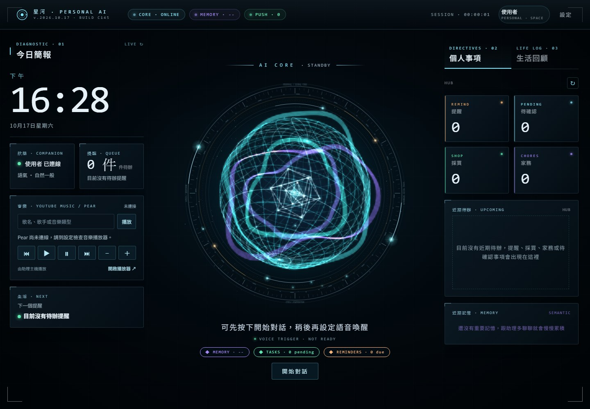
C145 實際介面 · 名字與生活紀錄使用示範資料
最早叫做「小白」，想做一個能用聲音喚醒的家庭助理。現在把入口重新整理成個人空間：不用挑家人或頭像，替 AI 取名字、告訴它怎麼稱呼你，再連接自己的 OpenRouter 帳號。
保留原本的全息光球與日常工具。你可以說「三十分鐘後提醒我出門」、「記住我喜歡清淡一點」，或請它查資料、播放音樂。介面和喚醒詞會跟著你替助理取的名字改變。
首次喚醒模型與選用播放器需要另外下載。已安裝舊版時，先從系統匣結束助理與 Pear，再選原位置覆蓋安裝，既有資料會保留。
之後怎麼更新？在「設定 → 系統與重設」檢查更新，保留勾選下載完成後自動重啟即可。
需要解除安裝？到 Windows「設定 → 應用程式 → 已安裝的應用程式」找到 Awaken AI。一般解除安裝保留個人設定與音樂登入；要清除這些資料，先在助理完成「回到原廠狀態」。
像第一次開啟新裝置。全螢幕引導從歡迎、助理命名、稱呼與語氣，一路到自己的 API Key、聲音試聽與試叫。切頁採淡出、依序浮現和光球平滑移位；返回時保留輸入，減少動態模式也可使用。
個人化收進設定。首頁只留一個設定入口。第一頁就能重新個人化、修改稱呼與日常偏好；重新個人化會保留記憶、提醒與連線。設定分為七類，模型與搜尋仍可獨立選擇。
真正重新開始。「系統與重設」會清除個人資料、對話、記憶、提醒、聲紋、裝置連線、API 金鑰及主機設定，也包括 Pear 的 YouTube Music 登入與配對。需在主機輸入「重設」並再次確認，完全結束播放器後，由下次啟動完成清除。程式與已下載模型保留。
從啟動就開始準備。Awaken AI 啟動器用全息球與階段進度顯示準備狀態，平常隱藏命令列視窗，完成後開啟助理。還沒命名時顯示「你的 AI」，設定後使用自己的名字。
提醒像鬧鐘。移除 Email 提醒，改為自行設定提醒幾次、每隔幾分鐘；預設每分鐘一次、總共三次，包含第一次，最後一次後停止。電腦、服務與助理頁面需保持開啟，亦可提前停止。
首頁更簡潔。移除天氣卡、中央來源按鈕及底部推送列。需要天氣直接用語音詢問；搜尋先說結論，再補少量重點。通知設定也只留下日常會使用的鬧鐘選項。
安裝與線上更新。Windows 安裝包隨附 Python 與 CPU 語音環境，可選安裝位置、閱讀資料使用說明並查看進度。新版從獨立公開更新區下載。可勾選下載完成後自動更新並重啟，也可稍後重開；驗證簽章後才套用，保留個人設定與資料。舊版首次載入新啟動器仍需自行重開。完整安裝包統一使用 app 目錄；舊版選原位置覆蓋安裝，資料會一起改名保留。小型線上更新仍沿用原目錄。已安裝 C142 的使用者第一次需使用一次更新工具切換來源。
點圖片可放大、左右切換。以下為 C145 示範畫面；啟動器使用介面繪圖預覽，其餘來自實際前端，沒有真實金鑰、音樂帳號或生活紀錄。
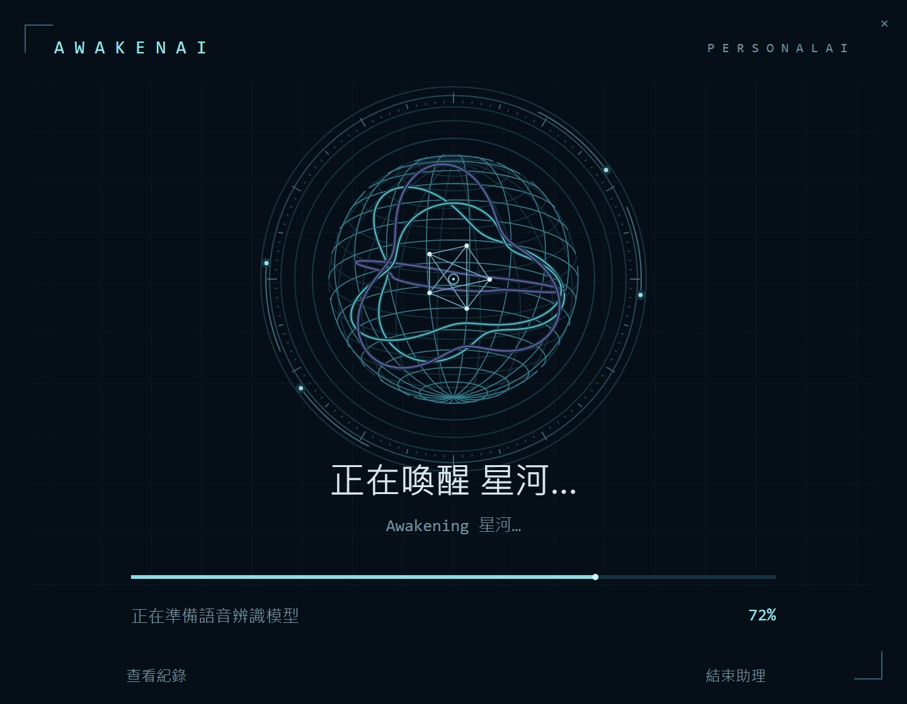
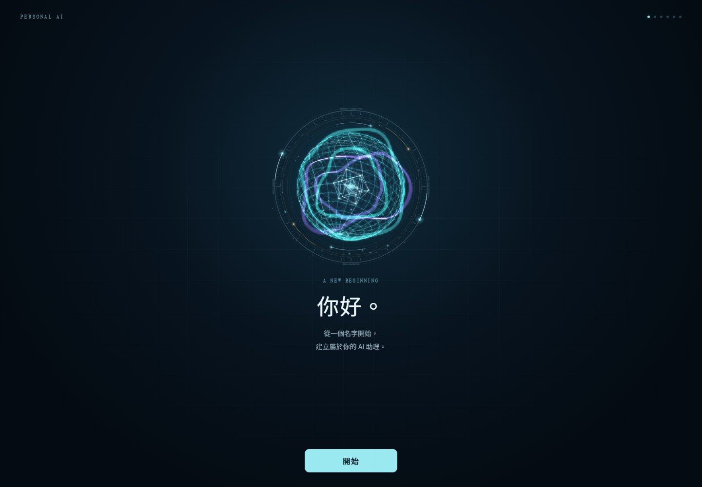
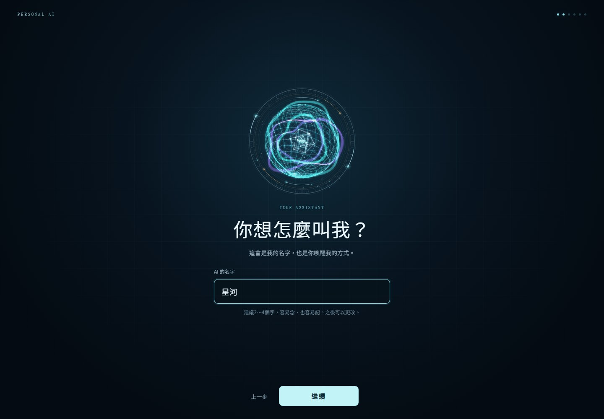
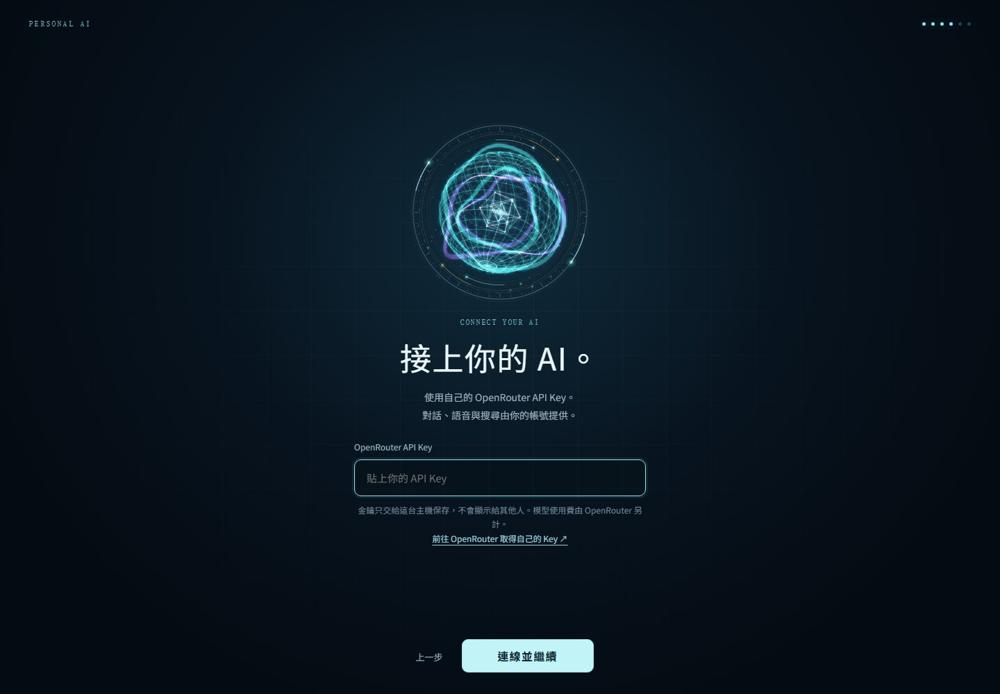
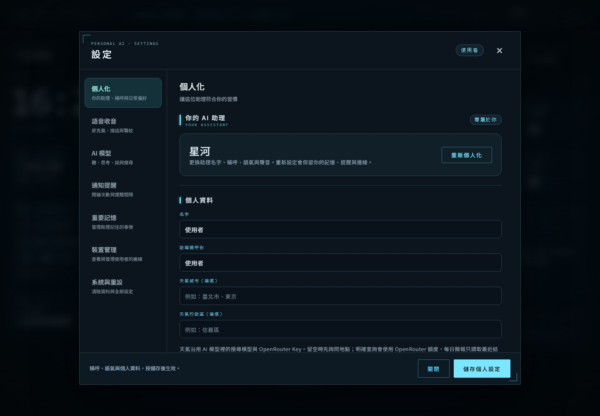
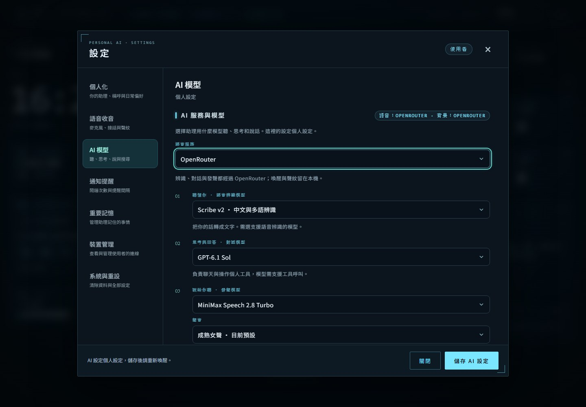
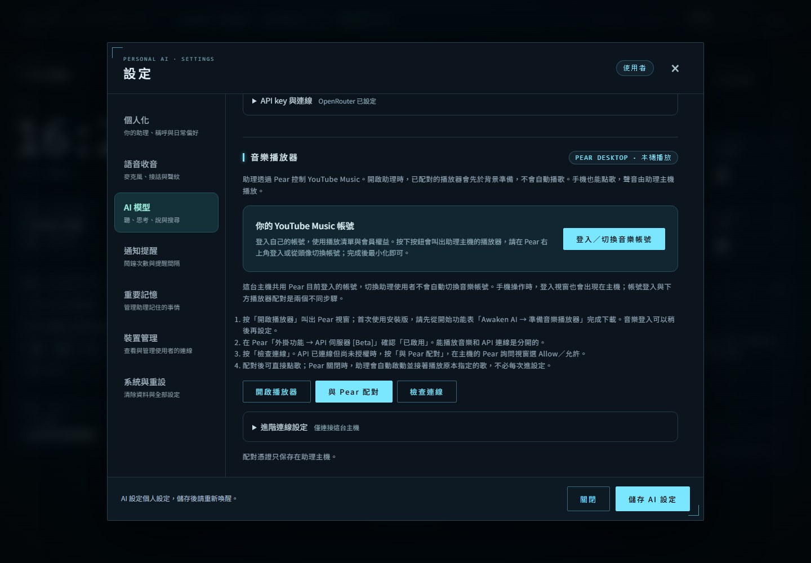
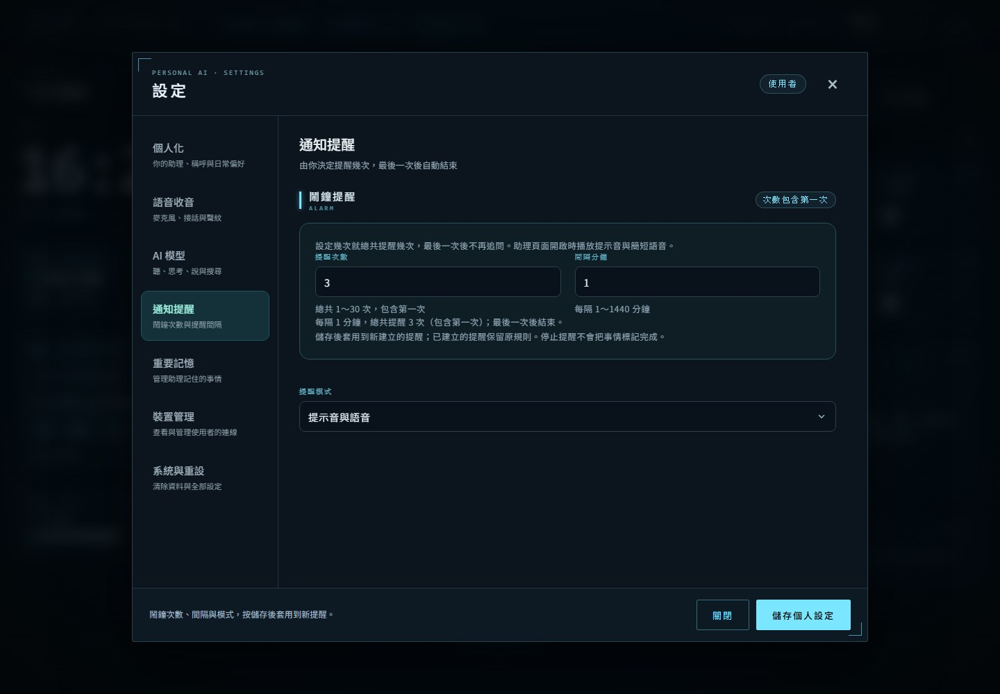
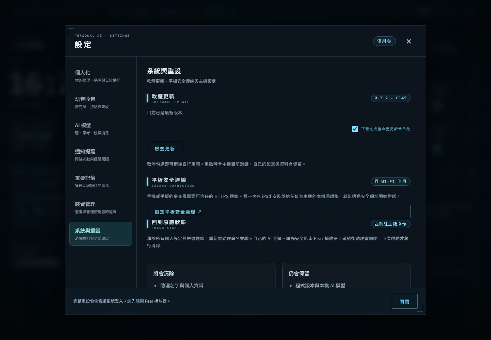
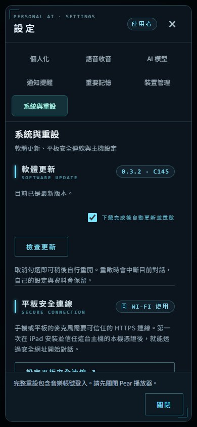
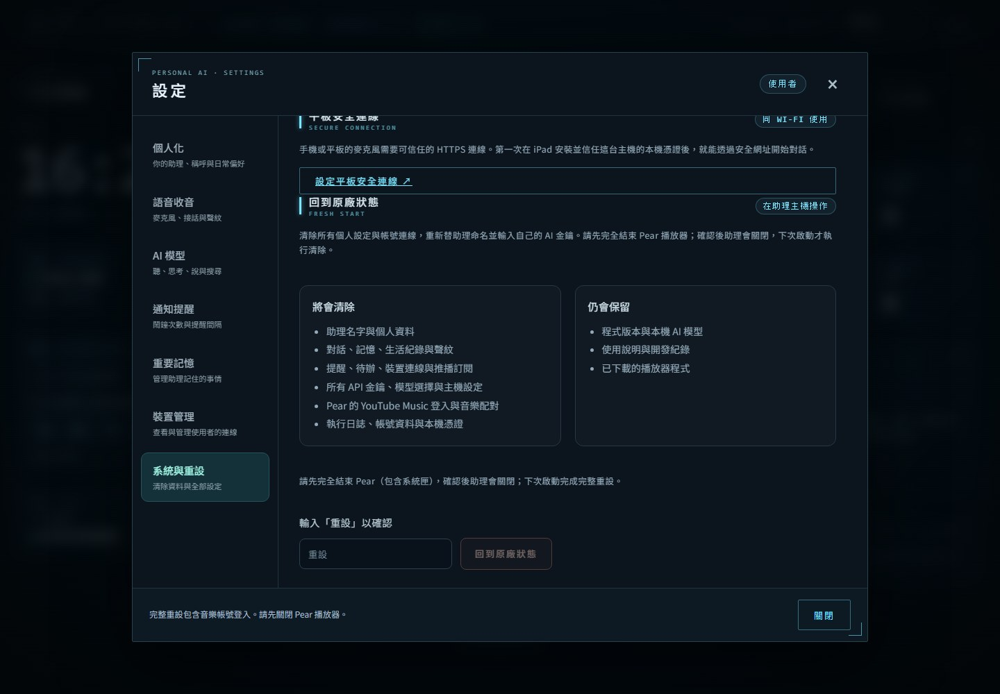
| 主機 | Windows 電腦執行 Python／FastAPI；SQLite 保存本機資料，Pear 播放音樂 |
| 操作裝置 | 電腦、手機與平板瀏覽器；目前主要驗證 Chrome／Chromium |
| 連線方式 | 主機使用 localhost；同 Wi-Fi 的手機／平板有本機 HTTPS 指引，iPad 需一次性安裝並信任憑證，再允許麥克風。金鑰、軟體更新與完整重設需在主機操作 |
| AI 帳號 | 自行提供 OpenRouter API Key；所選雲端服務需要網路，API 使用費另計 |
| 開放狀態 | 0.3.2／C145 公開測試版；提供安裝包、簽章更新與程式快照，舊歷史庫仍維持私人 |
首次設定、七類設定、完整重設、語音與音樂已用隔離資料和模擬服務驗證。更新流程也測試簽章、下載續傳、資料保留與失敗復原；安裝版不需另外安裝 Python，首次喚醒模型與選用播放器另下載。C143 新增21個經官方目錄核對的文字模型選項；更新與安裝使用隔離資料驗證，雲端模型、會員及真實裝置仍需使用者測試。Windows EXE 尚無發行者簽章，可能顯示未知發行者。